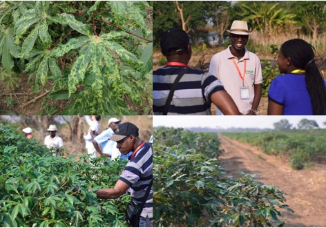

Two major challenges over the coming decades are food security and biodiversity loss; Both are intrinsically linked to the health of wild and cultivated plants and each is exacerbated by the frequency and nature of extreme weather patterns, emergence of new pandemics and regional instability.
Our models have been used to inform policy on emerging pest and pathogen threats by the UK Government, United States Department of Agriculture and Australia.

Leaves showing symptoms of cassava mosaic virus; Pathogen identification training sessions for farmers in East Africa coordinated by partners from the Cassava Diagnostics Project (CDP)
Images: Epidemiology & Modelling Group, University of Cambridge
We work with partners to find effect ways to summarise and deliver our model outputs to government agencies and extension workers who in turn, inform famers and landowners of pest and disease risk through an established network of communication channels in-country. Through working in this way, we can deliver a real-time advisory service directly to subsistence farmers in sub-Saharan Africa and Southern Asia.

Principal contributors CIMMYT, University of Cambridge, UK Met Office, EIAR, ATA, MoALR Source: Allen-Sader et al. (2019) Environment Research Letters